3.2 Electromagnetism
When current passes through a conductor, a temporary, circular magnetic field is created around it. A compass follows these field lines in the same way as for a magnet.
We use the right-hand grip rule to find the direction of the field:
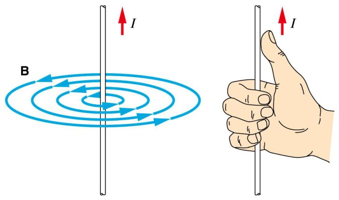
To show current or field lines in 3D on a flat page, we use these conventions:
- Out of the page: a dot in a circle, ⊙ (like the point of an arrow coming towards you).
- Into the page: a cross in a circle, ⊗ (like the tail feathers of an arrow going away).
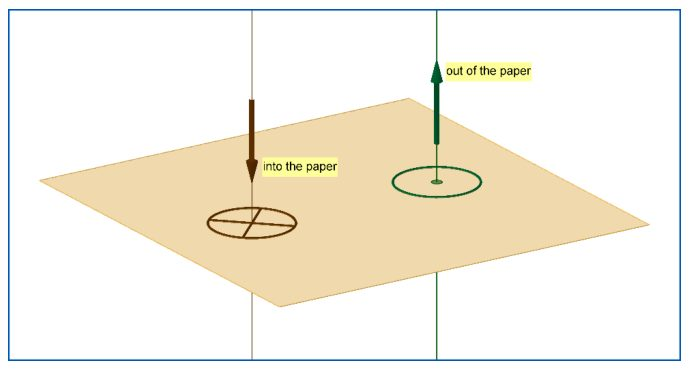
- The magnetic field around a current-carrying wire is .
- Using the right-hand grip rule, your thumb points in the direction of the .
- A cross in a circle (⊗) means the current is going .
- If current flows out of the page (⊙), the magnetic field circles the wire (as seen from the front).
For (d), point your right thumb towards you: your fingers curl anticlockwise.
3.3 Electric motors
The magnetic force
When the magnetic field around a wire interacts with an external magnetic field (e.g. from bar magnets), a force acts on the wire. If we know the direction of the current and the magnetic field, we can find the direction of the force using the right-hand slap rule.
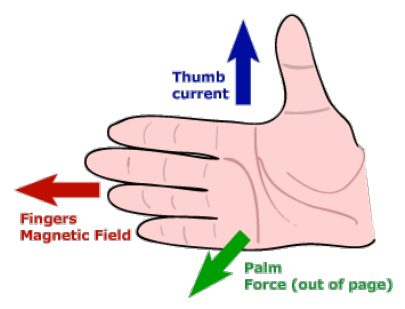
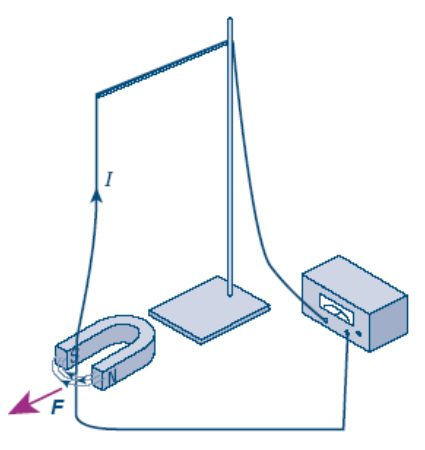
Find the direction of the force on the wire in each example.
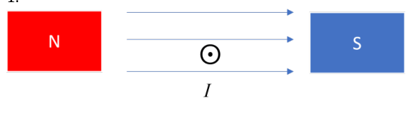
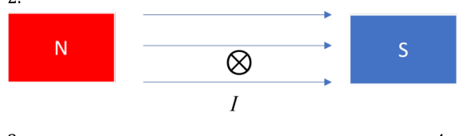
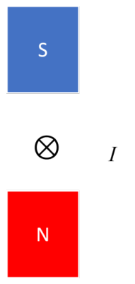
Example 1: fingers point right (N to S), thumb points out of the page, so the palm faces up. Example 3: the field points up (from N at the bottom to S at the top), the thumb points into the page, so the palm faces right.
Electric motors
DC motors use the magnetic force to produce rotation. The force is up on one side of the coil and down on the other, which turns the coil.
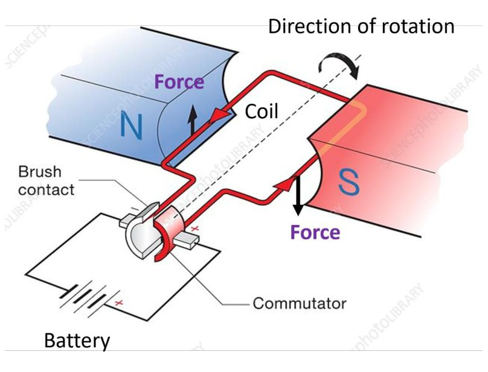
| Part | Function |
|---|---|
| Battery | Supplies the voltage to create a current in the circuit |
| Brush contact | Connects the battery to the coil |
| Coil | Creates a magnetic field that interacts with the external magnets |
| Commutator | Reverses the current every half-turn |
The force on the coil must be reversed every half-turn so the motor keeps turning in the same direction. This is done by the commutator (split ring).
Prac: investigating motors
Aim: to investigate how electric motors work, both commercial and improvised.
Materials: bar magnets, working demo motors, demo motors for disassembly, cables, 2–12 V DC supply (5 A), DIY motor kits.
Task A: commercial motor
Connect the motor to a 4 V DC source; the shaft should spin quite fast. Reverse the connections to the battery. What happens?
The motor spins in the opposite direction, because reversing the current reverses the force on the coil.
Increase the voltage to 6 V and then 8 V. Describe the effect on the motor.
The motor spins faster. A higher voltage gives a larger current, which produces a larger force on the coil.
Task B: improvised motor 1
Use the disassembled parts of a motor to recreate how it works: a pen at each end of the axle, a pair of bar magnets either side of the coil (close but not touching), and two clips connected to a DC supply touching either side of the commutator.
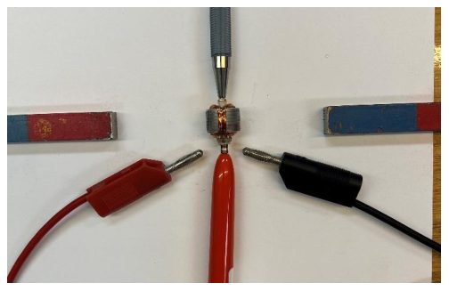
Describe how the improvised motor operates.
The coil spins quickly. It spins faster if the magnets are brought closer to the coil.
Why do you think there are so many coils of wire on each winding?
More turns of wire make a stronger magnetic field around the coil, which increases the size of the force and makes the motor more powerful.
Commercial motors often use curved magnets rather than rectangular bar magnets. What is the advantage of curved magnets?
Curved magnets can be placed closer to the spinning coil without touching it, so the coil stays in a strong magnetic field all the way around.
Task C: improvised motor 2
Build a simple DC motor from a D-cell battery, copper wire, a wooden dowel, rubber bands, a neodymium magnet, 2 safety pins and sandpaper.
- Wind about 8–10 turns of copper wire around the dowel, leaving about 4 cm of wire at each end.
- Tie the ends around the loop and straighten the bits that stick out.
- Attach the two safety pins to the battery with the rubber band, so the pins touch the terminals.
- Rest the coil in the loops of the safety pins. Bend the wires if needed until it is balanced and spins freely.
- Take the coil out and sand the insulation off half of the circumference of each wire end (the bare halves on the same side), right up to the coil.
- Put the coil back, place the magnet on the battery and see if the coil turns.
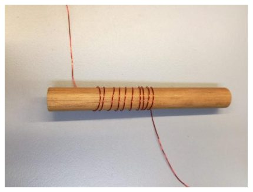
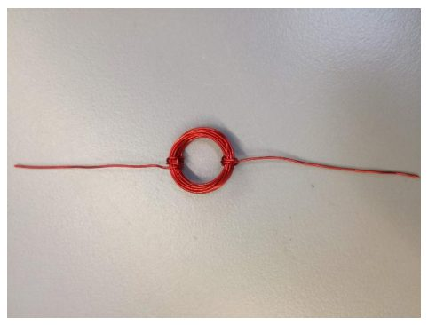
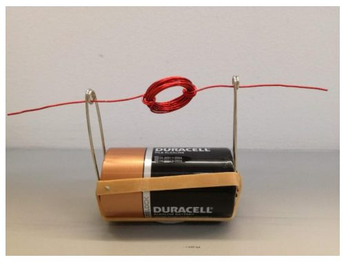
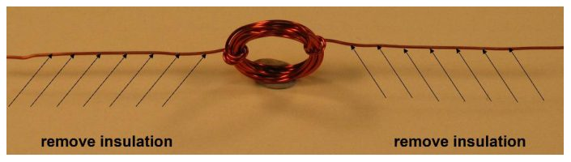
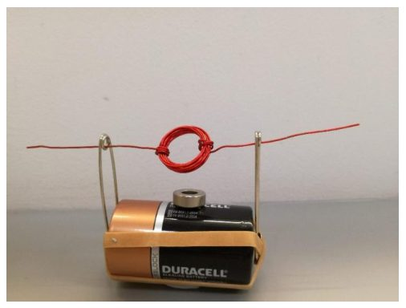
Troubleshooting: gently flick the coil to start it; try reversing the coil or rebalancing it; change the position of the coil relative to the magnet; check the sanded area is free of insulation; check the safety pins are touching the battery terminals.
Why do you sand the insulation off only half of the circumference of each wire end?
It acts like a simple commutator. Current only flows for half of each turn, so the coil gets a push in the same direction each turn. During the other half-turn no current flows, and the coil keeps spinning by its momentum. If the whole wire were bare, the force would push the coil back the other way and it would just rock back and forth.
Section 3.3: Key summary questions
Use the right-hand grip rule to describe the direction of the field around (a) a wire with current flowing upwards and (b) a wire with current flowing into the page.
- Thumb pointing up: the field circles the wire anticlockwise when viewed from above.
- Thumb pointing into the page: the field circles the wire clockwise as you look at the page.
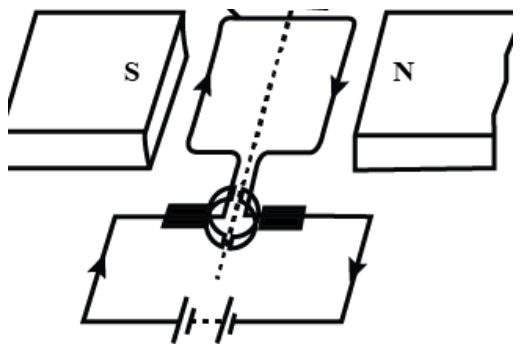
Match each part of the motor to the term that describes it.
The part that supplies the current:
The part that rotates between the magnets:
The split ring that reverses the current every half-turn:
The contact that connects the circuit to the split ring:
In a motor coil between N and S magnets, the current flows in opposite directions along the two long sides of the coil. Describe the forces on the two sides and the resulting motion.
Using the right-hand slap rule, the force on one side of the coil is up and the force on the other side is down, because the current flows in opposite directions on the two sides. These opposite forces make the coil rotate about its axle. The commutator reverses the current every half-turn so that the coil keeps rotating in the same direction.